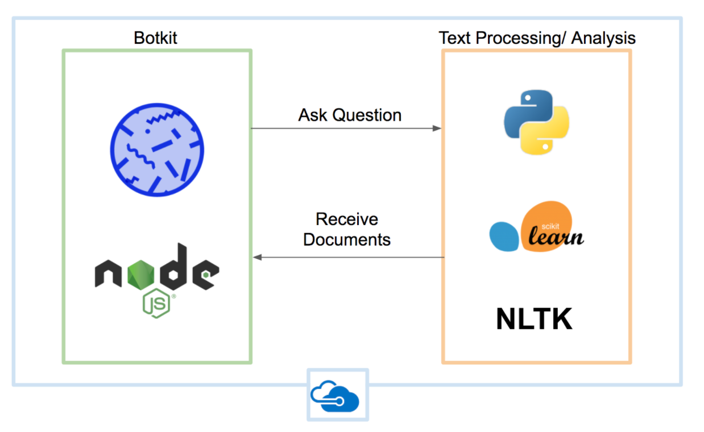
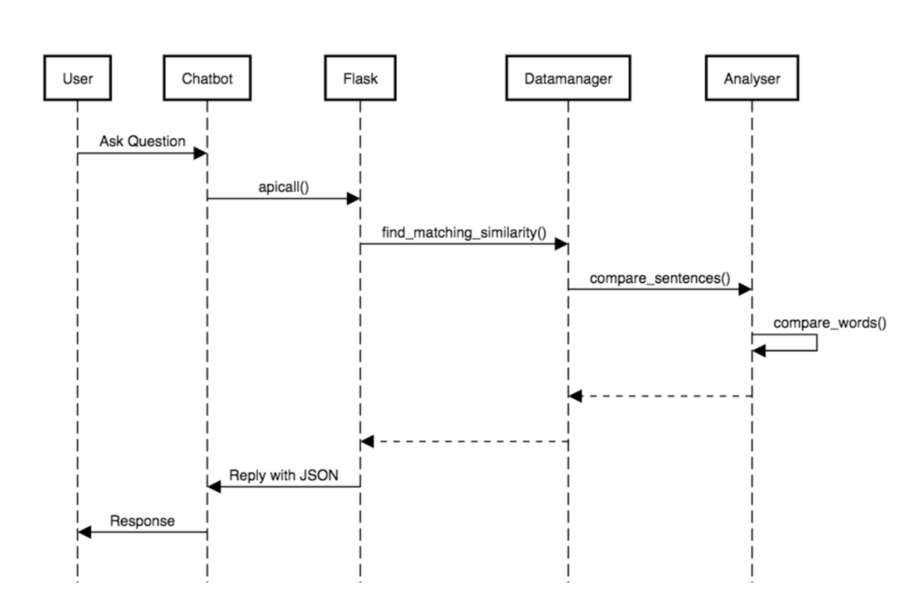

Design
System Architecture Diagram

Sequence Diagram

Design Pattern
Proxy
- For the FLask API we used the proxy pattern to encapsulate the database. This way any database can be used by only changing the database_manager.py, no other changes are needed.
Iterator
- To query the data we used the Iterator pattern. This is a common design pattern used for such a task.
Null Object
- The null object is used when the database_manager.py does not return any actual answer. Afterwards the return of the function is checked for content.
Singleton
- The singleton pattern is used for the application. There can only be one instance of a flask app at any given time.
Observer
- The observer pattern is used for all bot conversations. The bot listens to specific words and triggers scripts accordingly.
Data Storage
The data is stored locally in the flask app. Since Camden has a large data pipeline and only gave us a small sample to work on, creating a separate database for our app and synchronising it with the open camden database would have been a tedious and in the end redundant task. We have a local .json file which is parsed when the app is first started. Our data is a list of documents. A document object has several entries: a title, a date, a link and several questions. The questions have been processed by our analyser.